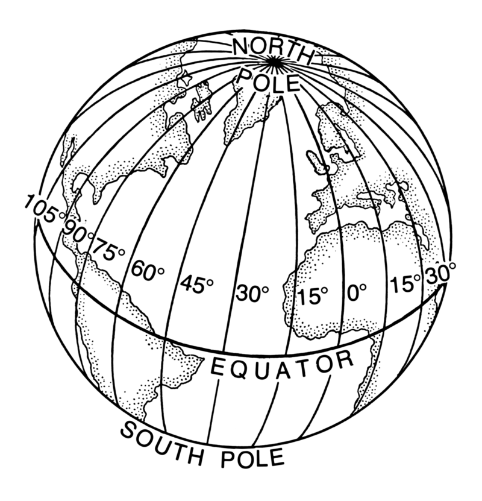
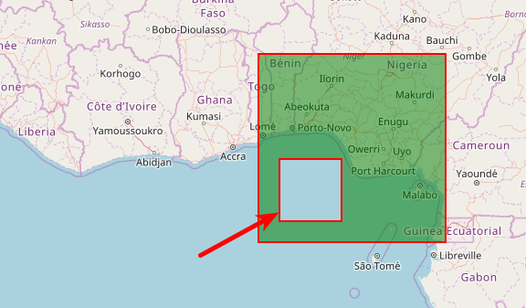
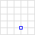

|
Guten Morgen |
Teil 1
Ausblick
- Eine Karte erstellen
- Kartenkacheln - Kartenbilder
Grundgerüst
|
JavaScript und CSS
|
Container mit ID und Höhe
|
Das Karten-Objekt
|
Geografische Koordinaten

|
 |
|
Karten-Layer
|
| ZoomStufe | Kachelanzahl | Die Kachelbreite entspricht | Ein Pixel entspricht |
|---|---|---|---|
| 0 | 1 | 40.038 km | 156 km |
| 1 | 4 | 20.019 km | 78 km |
| .. | .. | .. | .. |
| 18 | 69 Mrd. | 153 m | 0,6 m |
| 19 | 275 Mrd. | 76 m | 0,3 m |
|
||
|
Weitere Anbieter: http://wiki.openstreetmap.org/wiki/Tiles | ||
Foto oder Rastergrafik als Karte
<!DOCTYPE HTML>
<html>
<head>
<title>Eine OSM Karte mit Leaflet</title>
<link rel="stylesheet" href="../leaflet/leaflet.css" />
<script src="../leaflet/leaflet.js"></script>
</head>
<body>
<div style="height: 700px;" id="mapid"></div>
<script>
var mymap = L.map('mapid').setView([50.27264, 7.26469], 7);
L.tileLayer('http://{s}.tile.osm.org/{z}/{x}/{y}.png').addTo(mymap);
var dwd = L.tileLayer.wms("https://maps.dwd.de/geoserver/dwd/wms", {
format: 'image/png',
transparent: true,
layers:'dwd:Warngebiete_Kreise',
attribution: "Deutscher Wetterdienst"
}).addTo(mymap);
</script>
</body>
</html>
Erinnert ihr euch an den 27. Juli 2017?

Resümee
- Eine Leaflet-Karte
- Kartenkacheln - Kartenbilder
- Fragen?
Teil 2
Ausblick
- Geodaten in Leaflet
Ein Punkt
|
Ein Marker
|
Eine Polyline
|
Ein Polygon
|
Rectangle
|
Circle
|
Mehrere Polylines auf einem Layer
|
|  |
|

|
|

|
|
Eine LayerGroup
|
Ein FeatureGroup
|
Resümee
- Geodaten in Leaflet
- Fragen?
Teil 3
Ausblick
- GeoJSON allgemein
- GeoJSON Objekte
- GeoJSON in Leaflet
Wurzeln von GeoJSON
XML
<joomlers>
<number>1721</number>
<vorname>Astrid Günther</vorname>
</joomlers>
„joomlers“: {
„number“: „1721“,
„vorname“: „Astrid Günther“
},
Position - Koordinate - [Länge, Breite, Höhe]
{ "type": "Point",
"coordinates": [30, 10]
}
Point | Multipoint
|  |
|

|
|
LineStrings | MultiLineString

|
|

|
|
Polygone

|
|

|
|
Multipolygon

|
|

|
|
Feature
{
"type": "Feature",
"geometry": {
"type": "Polygon",
"coordinates": [[30, 20], [45, 40], [10, 40], [30, 20]]
},
"properties": {
"prop0": "value0",
"prop1": {"this": "that"},
"prop2": true,
"prop3": null,
"prop4": ["wert1", "wert2", "wert3"],
"prop5": 0.0
}
}
FeatureCollection
{
"type": "FeatureCollection",
"features": [
{
"type": "Feature",
"geometry": {
"type": "Point",
"coordinates": [0, 0]
},
"properties": {
"name": "Der Name des Features"
}
}
]
}
Grenzen von GeoJSON
- Komprimierung
- Datentypen
- Pop-up Fenster
- Kreise und Kurven
- Eigenschaften für Positionen
GeoJSON in Leaflet - Ein Feature
|
toGeoJSON() und addData()
|
Style
|
Ereignisse
|
onEachFeature()
|
Resümee
- GeoJSON allgemein
- GeoJSON Objekte
- GeoJSON in Leaflet
- Fragen?
Teil 4
Ausblick
- Benutzerdefinierten Marker
- Vererbung
- Plugins
Benutzerdefinierter Marker
|
Benutzerdefinierter Marker - Icon positionieren
|
Benutzerdefinierter Marker - Vererbung
|
Das Plugin BeautifyMarker
|
Marker Clustern
|
Animierte Marker - bouncemarker.js
|
Animierte Marker - AnimatedMarker.js
|
Resümee
- Benutzerdefinierten Marker
- Vererbung
- Plugins
- Fragen?
Teil 5
Ausblick
- ESRI (Environmental Systems Research Institute) Service Geocoding ansehen.
- Plugin Leaflet Routing Machine
ESRI Services - Geocoding - Geocoding.geosearch()
|
ESRI Services - Geocoding - Geocoding.geocode().text(address).run()
...html?a=56751 Gering
|
ESRI Services - Geocoding - Geocoding.reverseGeocode()
|
Routing Leaflet Routing Machine
|
Routing - Options
|
Routing - Geocoding
|
Routing - Mapbox
|
Resümee
- Geocoding und Routing Plugins angesehen.
- Fragen?
Was haben wir gemacht
Eine einfache KarteGeodaten in Leaflet und GeoJSON
Benutzerdefinierte Markern
Geocoding und Routing